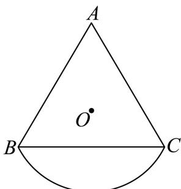
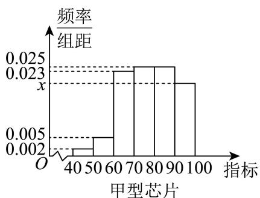
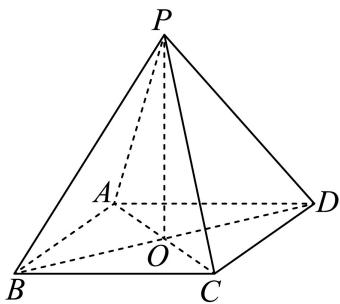

填空题
按本区原卷题号顺序排列。
奉贤 · 第1题 ★☆☆☆☆ · 教师预估
本题资料或解析有待核事项，预览不可作为已审定成品。
设全集 U={1,2,3,4}，集合 A={2,4}，则 A= ______。
考点：有限集合的补集运算。
难度依据：按全集删除集合已有元素
核查说明：仅核本题所列字段及页面；不等于全卷终审。；题干与解析已用于人工归类，尚未完成整题公式校净与独立数学终审。；题干补集横线漏识；同名PDF第1页文字层确认是A的补集。
展开答案与解析
奉贤 · 第2题 ★☆☆☆☆ · 教师预估
若直线l1 : :x+ay−2=0 : ! 与直线l2：ax + y − 2 = 0互相垂直，则a =
考点：一般式直线垂直的系数条件。
难度依据：用系数内积为零避免漏斜率不存在情形
核查说明：题干与解析已用于人工归类，尚未完成整题公式校净与独立数学终审。
展开答案与解析
奉贤 · 第3题 ★☆☆☆☆ · 教师预估
已知x ∈ R，则不等式 x2−x+2> 0的解集为
考点：判别式判断二次不等式恒正。
难度依据：二次项正且判别式负
核查说明：题干与解析已用于人工归类，尚未完成整题公式校净与独立数学终审。
展开答案与解析
奉贤 · 第4题 ★★☆☆☆ · 教师预估
本题资料或解析有待核事项，预览不可作为已审定成品。
设 f(x)={lnx+1,2x+1,x>0,x≤0. 若 f(x0)=1，则 x0=______。
考点：分段指数对数函数的给值求自变量。
难度依据：须分别检查两段方程与区间
核查说明：题干与解析已用于人工归类，尚未完成整题公式校净与独立数学终审。；题干分段函数缺少x>0时ln x+1这一整支；已定向下载同名PDF，第1页文字层确认两支为ln x+1(x>0)、2^x+1(x≤0)，本分类未改底稿。
展开答案与解析
奉贤 · 第5题 ★☆☆☆☆ · 教师预估
若A, B, C, D, E五人站成一排，如果A, B必须相邻，那么排法共 种.
考点：相邻排列的捆绑法。
难度依据：整体排列后补内部排列
核查说明：题干与解析已用于人工归类，尚未完成整题公式校净与独立数学终审。
展开答案与解析
奉贤 · 第6题 ★★☆☆☆ · 教师预估
(x6+xx1)! 5 的二项展开式中的常数项为 ．（用数字作答）
考点：含分数指数的二项展开常数项。
难度依据：准确列指数并令其为零
核查说明：题干与解析已用于人工归类，尚未完成整题公式校净与独立数学终审。
展开答案与解析
奉贤 · 第7题 ★★☆☆☆ · 教师预估
已知抛物线 x2=ay(a>0) 上有一点P到准线的距离为6，点P到x轴的距离为4，则抛物线的焦点坐标为
考点：抛物线准线距离与焦点参数。
难度依据：先定纵坐标再用准线距离反求参数
核查说明：题干与解析已用于人工归类，尚未完成整题公式校净与独立数学终审。
展开答案与解析
奉贤 · 第8题 ★★☆☆☆ · 教师预估
本题资料或解析有待核事项，预览不可作为已审定成品。
在复平面内，O 为坐标原点，复数 z1=i(−4−3i)，z2=12+5i 对应的点分别为 Z1,Z2，其中 i 为虚数单位，则 ⟨OZ1,OZ2⟩ 的大小为 ______。
考点：复数运算与复平面坐标；坐标数量积求向量夹角。
难度依据：复数乘法转坐标后求余弦与夹角
核查说明：仅核本题所列字段及页面；不等于全卷终审。；题干与解析已用于人工归类，尚未完成整题公式校净与独立数学终审。；题干夹角括号缺失，需规范向量夹角符号。
展开答案与解析
奉贤 · 第9题 ★★☆☆☆ · 教师预估
甲乙两人下棋，每局两人获胜的可能性一样，某一天两人要进行一场三局两胜的比赛，最终胜者赢得100元奖金，第一局比赛甲获胜，后因为有其他事情而中止比赛，则甲应该分 元奖金才公平？
考点：中止赛制的条件胜率和公平分奖。
难度依据：当前比分下用乙再连胜的补事件
核查说明：题干与解析已用于人工归类，尚未完成整题公式校净与独立数学终审。
展开答案与解析
奉贤 · 第10题 ★★★☆☆ · 教师预估
申辉中学高一（8）班设计了一个“水滴状”班徽的平面图（如图），徽章由等腰三角形ABC及以弦BC和劣弧BC所围成的弓形所组成，其中 AB=AC ，劣弧BC所在的圆为三角形的外接圆，圆心为O

已知 ∠BAC=θ,θ∈(0,2π) ，外接圆的半径是2，则该图形的面积为 ．（用含θ的表达式表示）
考点：圆心角圆周角与扇形三角形面积建模。
难度依据：分割复合图形并用圆周角关系表示面积
核查说明：题干与解析已用于人工归类，尚未完成整题公式校净与独立数学终审。
展开答案与解析

奉贤 · 第11题 ★★☆☆☆ · 教师预估
上海市奉贤区奉城镇的古建筑万佛阁（图1）的屋檐下常系挂风铃（图2），风吹铃动，悦耳清脆，亦称惊鸟铃，一般一个惊鸟铃由铜铸造而成，由铃身和铃舌组成，为了知道一个惊鸟铃的质量，可以通过计算该惊鸟铃的体积，然后由物理学知识计算出该惊鸟铃的质量，因此我们需要作出一些合理的假设：
假设1：铃身且可近似看作由一个较大的圆锥挖去一个较小的圆锥；
假设2：两圆锥的轴在同一条直线上；
假设3：铃身内部有一个挂铃舌的部位的体积忽略不计截面图如下（图3），其中 ℑO1O3=20cm 1 O2O3=18cm AB=16cm ，则制作100个这样的惊鸟铃的铃身至少需要 千克铜．（铜的密度为8 .9g/cm3) （结果精确到个位）

图1
图2

图3
考点：圆锥挖空体积与质量估算。
难度依据：作两个圆锥体积差后处理密度与单位
核查说明：题干与解析已用于人工归类，尚未完成整题公式校净与独立数学终审。
展开答案与解析
奉贤 · 第12题 ★★★★☆ · 教师预估
本题资料或解析有待核事项，预览不可作为已审定成品。
已知集合 ∂M={P0,P1,P2,⋯,Pn},n≥2,n∈N 是由函数 y=cosx,x∈[0,2π] 的图象上两两不相同的点构成的点集，集合 S={a∣a=OP0⋅OPi,i=0,1,2,⋯,n,n≥2,n∈N} ，其中 P0(0,1) P1(π,−1) ．若集合S中的元素按照从小到大的顺序排列能构成公差为d的等差数列，当 d∈{21,1} 时，则符合条件的点集M的个数为
考点：坐标数量积提取纵坐标；有限等差数列公差分类；余弦函数定值点枚举；有必选点约束的集合计数；点集到数集映射的重合与去重。
难度依据：公差两种情形下按同纵坐标点的非空选择计数
核查说明：题干与解析已用于人工归类，尚未完成整题公式校净与独立数学终审。；原解多个余弦值与横坐标被错排，计数思路可辨但公式未校净。
展开答案与解析
选择题
按本区原卷题号顺序排列。
奉贤 · 第13题 ★★☆☆☆ · 教师预估
在 △ABC r 中， ∗C=2π; ”是 ¨sin2A+sin2B=1 ”的（ ）
A. 充分不必要条件
B. 必要不充分条件
C. 充要条件
D. 既不充分也不必要条件
考点：三角命题的充分必要性与反例；三角形内角关系及平方和恒等式。
难度依据：充分性用互余关系必要性需构造非直角反例
核查说明：题干与解析已用于人工归类，尚未完成整题公式校净与独立数学终审。
展开答案与解析
奉贤 · 第14题 ★★★☆☆ · 教师预估
函数 y=log2sinx+log2cosx ，则下列命题正确的是（ ）
A. 函数是偶函数
B. 函数定义域是 (0,2π)
C. 函数最大值−1
D. 函数的最小正周期为π
考点：复合对数函数定义域与周期；正弦余弦同正区域及二倍角最值。
难度依据：周期不能只看化简式还需保留原定义域
核查说明：题干与解析已用于人工归类，尚未完成整题公式校净与独立数学终审。
展开答案与解析
奉贤 · 第15题 ★★★☆☆ · 教师预估
在四棱锥 S−ABCD 中，若 SA=xSB+ySC+zSD ，则实数组(x, y, z)可能是（ ）
A. (1,−1,1)
B. (1,0,−1)
C. (1,0,0)
D. (1,−1,−1)
考点：空间向量线性表示与共面约束；四棱锥底面形状的可实现性。
难度依据：向量线性式须检验能否构成真实四棱锥
核查说明：题干与解析已用于人工归类，尚未完成整题公式校净与独立数学终审。
展开答案与解析

奉贤 · 第16题 ★★★★☆ · 教师预估
本题资料或解析有待核事项，预览不可作为已审定成品。
已知数列 {an} 不是常数列，前n项和为 Sn, an>0 ．若对任意正整数n，存在正整数m，使得∣Sn−am∣<a1 ，则称 {an} 是“可控数列”．现给出两个命题：
①若各项均为正整数的等差数列 {an} 满足公差 d=3 ，则 {an} 是“可控数列”；
②若等比数列 {an} 是“可控数列”，则其公比 q∈(0,21]
则下列判断正确的是（ ）
A. ①与②均为真命题
B. ①与②均为假命题
C. ①为假命题，②为真命题
D. ①为真命题，②为假命题
考点：可控数列的等差反例与等比参数；全称存在量词下的数列逼近；绝对值邻近条件与几何和界。
难度依据：需理解每个n可另选m的量词并验证反例与参数
核查说明：题干与解析已用于人工归类，尚未完成整题公式校净与独立数学终审。；原解排除q>1时疑似把“对每个n存在m”换成固定m后令n增大，量词证明需独立核查，不按原解直接定稿。
展开答案与解析
解答题
按本区原卷题号顺序排列。
奉贤 · 第17题 ★★★☆☆ · 教师预估
本题资料或解析有待核事项，预览不可作为已审定成品。
已知函数 y=f(x) ，其中 f(x)=ax （常数 [a>0 且 .a=1) ）
(1) (6分)若函数 ⋅y=f(x) 的图象过点(2,9)，求关于x的不等式 f(∣2x−1∣)> 3的解集；
(2) (8分)若存在 Φ:x∈(0,1] ，使得数列f (1)、f (tx)、 f(x2+2) 是等比数列，求实数t的取值范围.
考点：（1）定底数后解绝对值不等式；（2）等比条件化为参数函数并求受限值域。
难度依据：（1）定底数后解绝对值不等式；（2）等比条件化为参数函数并求受限值域
核查说明：仅完成本题所述针对性校核；不代表其他题或全卷数学通过。；题干与解析已用于人工归类，尚未完成整题公式校净与独立数学终审。；第2问“存在x”变量被OCR写为冒号与乱码，须规范存在量词。
展开答案与解析
奉贤 · 第18题 ★★★☆☆ · 教师预估
本题资料或解析有待核事项，预览不可作为已审定成品。
某芯片代工厂生产甲、乙两种型号的芯片，为了解芯片的某项指标，从这两种芯片中各抽取100件进行检测，获得该项指标的频率分布直方图，如图所示：


假设数据在组内均匀分布，以样本估计总体，以事件发生的频率作为相应事件发生的概率
(1) (6分)求频率分布直方图中x的值并估计乙型芯片该项指标的平均值（同一组中的数据用该组区间的中点值为代表）；
(2) (8分)已知甲型芯片指标在[80, 100)为航天级芯片，乙型芯片指标在[60, 70)为航天为航天级芯片．现分别采用分层抽样的方式，从甲型芯片指标在[70,90)内取2件，乙型芯片指标在[50,70)内取4件，再从这6件中任取2件，求至少有一件为航天级芯片的概率
考点：（1）直方图面积归一与组中值均值；（2）分层确定样本组成再算至少一个事件。
难度依据：（1）直方图面积归一与组中值均值；（2）分层确定样本组成再算至少一个事件
核查说明：题干与解析已用于人工归类，尚未完成整题公式校净与独立数学终审。；解析第2问乙型芯片误写甲型且存在枚举乱码，须校净。
展开答案与解析
奉贤 · 第19题 ★★★★☆ · 教师预估
本题资料或解析有待核事项，预览不可作为已审定成品。
如图为正四棱锥 P−ABCD,O 为底面ABCD的中心


(1)图
(2)图
(1) (6分)求证： CD// 平面 PAB, 平面 PAC⊥ 平面PBD；
(2) (8分)设E为PB上的一点，− BE=32BP.
在下面两问中选一个，
①若 AD=AP=32. ，求直线EC与平面BED所成角的大小
②已知平面ECD与平面ABCD所成锐二面角的大小为 arctan22 ，若 AD=32 ，求AP的长
考点：（1）证明线面平行与面面垂直；（2）选①建立坐标求线面角，选②由二面角反求棱长。
难度依据：（1）证明线面平行与面面垂直；（2）选①建立坐标求线面角，选②由二面角反求棱长
核查说明：题干与解析已用于人工归类，尚未完成整题公式校净与独立数学终审。；题干同时有图1图2和两种选做题，考点已分别标注，不得漏掉选②。
展开答案与解析

奉贤 · 第20题 ★★★★★ · 教师预估
本题资料或解析有待核事项，预览不可作为已审定成品。

椭圆Γ: a2x2+y2=1(a>1) 的左右焦点分别为 F1,F2 ，设 P(x0,y0) 是第一象限内椭圆上的一点，PF1 的延长线交椭圆于点 Q(x1,y1)

(1) (4分)若椭圆的离心率 22 ，求a的值；
(2) (6分) fa=2,PQ⋅OF1=512 ，求x0；
(3) (8分)若a = 2，过点 T(0,t) 的直线l与椭圆Γ交于M、N两点，且 ∣MN∣=2 ，则当 t≥0H 时，判 断符合要求的直线有几条，说明理由？
考点：（1）离心率定参数；（2）向量约束与焦点弦联立；（3）按参数讨论定长弦数目并补竖直线。
难度依据：（1）离心率定参数；（2）向量约束与焦点弦联立；（3）按参数讨论定长弦数目并补竖直线
核查说明：题干与解析已用于人工归类，尚未完成整题公式校净与独立数学终审。；原解第3问竖直线讨论写成t>0但题设允许t=0，最后汇总包含t=0；须规范边界说明。
展开答案与解析
奉贤 · 第21题 ★★★★★ · 教师预估
本题资料或解析有待核事项，预览不可作为已审定成品。
若函数 ⋅y=f(x) 的图象上存在k个不同点 P1∖ P2∖ ⋯ Pk(k≥2,k∈N) 处的切线重合，则称该切线为函数 y=f(x) 的一条k点切线，该函数具有k点切线性质
(1) (4分)判断函数 y=x2−2∣x∣,x∈R 的奇偶性并写出它的一条2点切线方程（无需理由）；
(2) (6分)设 f(x)=ex−lnx ，判断函数 y=f(x) 是否具有k点切线性质，并说明理由；
(3) (8分)设 y(x)=cosx+2x ，证明：对任意的 m≥3,m∈N ，函数 y=g(x) 具有m点切线性质，并求出所有相应的切线方程
考点：（1）偶性和双切线；（2）导数严格单调排除公切线；（3）比较斜率截距并用三角周期构造任意多个切点。
难度依据：（1）偶性和双切线；（2）导数严格单调排除公切线；（3）比较斜率截距并用三角周期构造任意多个切点
核查说明：题干与解析已用于人工归类，尚未完成整题公式校净与独立数学终审。；第3问题干g误写y，原解多处三角符号乱码，公切线论证待终审。
展开答案与解析